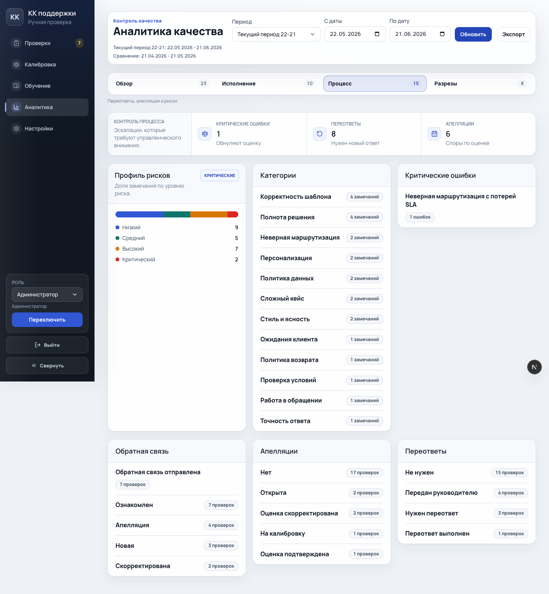
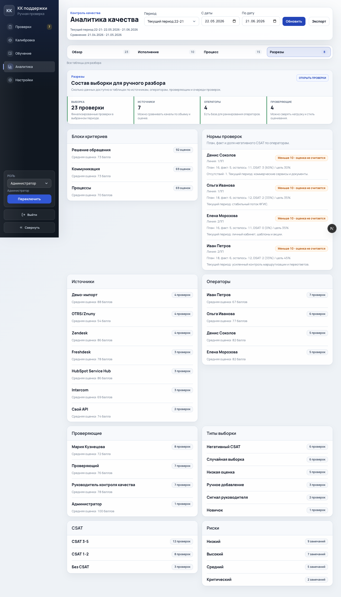
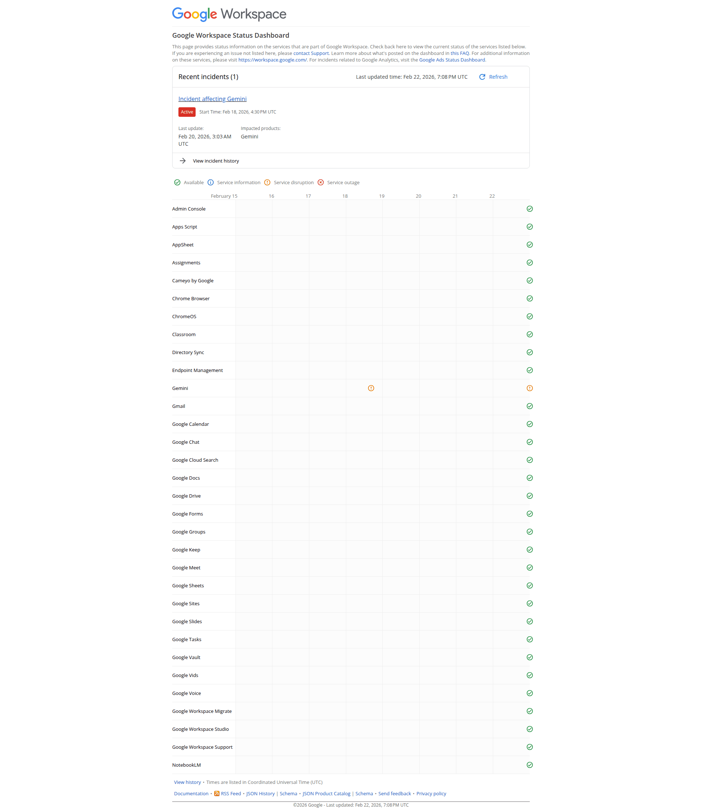
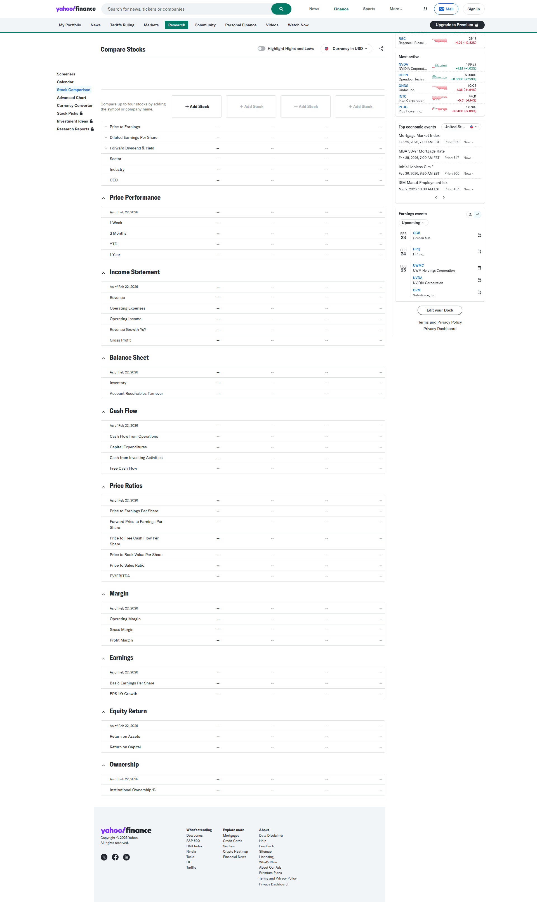

Design Brainstorm: Reports Subtabs
Самая сильная идея: взять паттерны не из BI-дашбордов, а из incident status, finance comparison и risk operations. Вкладки становятся рабочими режимами, а не разными наборами карточек.
Current State



Which Ideas to Prototype
| Idea | Novelty | Feasibility | Verdict |
|---|---|---|---|
| Risk-ops scoreboard for execution | Medium | High | Prototype |
| Status dashboard for process | Medium | High | Prototype |
| Finance compare workbench for details | High | High | Prototype |
The Obvious Approach
Обычный BI-подход показывает все вкладки как одинаковые карточки с графиками. Он понятный, но быстро превращает интерфейс в повторение.
Cross-Pollination Ideas
From Incident Status: Google Workspace status matrix

The Pattern: разделять текущее состояние и историю инцидентов, показывая срочность раньше подробностей.
Applied Here: вкладка процесса начинается с трех эскалационных показателей, затем идет профиль рисков и категории.
┌ Process health ┬ Critical ┬ Reanswer ┬ Appeals ┐ │ escalation │ 1 │ 8 │ 6 │ └────────────────┴──────────┴──────────┴─────────┘
From Finance: Yahoo Finance comparison

The Pattern: плотные таблицы становятся пригодными для анализа, когда есть индекс и группы.
Applied Here: вкладка разрезов получает sticky index с якорями на категории таблиц.
┌ Разрезы index ┐ ┌ Grouped tables ┐ │ Критерии │ │ blocks │ quota │ sources │ │ Норма │ │ people │ statuses │ └──────────────┘ └────────────────────────────────┘
Wild Cards
Следующий шаг для эксперимента: добавить мини timeline изменений внутри `Исполнение`, но только если появится API для событий по периодам. Сейчас лучше не выдумывать данные и держать экран операционным.